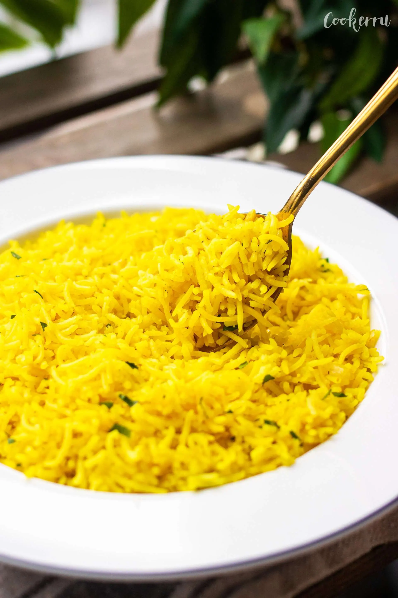

Fragrant Rice Recipe
Description
Fragrant Jasmine Rice with Onion, Garlic and Spices.
Ingredients
- Jasmine Rice
- Tumeric Powder
- Minced Garlic
- Chopped Onion
- Smoked Paprika
- Cumin Powder
- Chicken Bone Broth
Instructions
- Wash Rice 2-3 times
- Heat Pot with Oil
- Fry Onion and Garlic
- Add in Washed Rice
- Add in Bone Broth and Powder
- Add in Water
- Lid off until Water/Broth is boiling
- Low Heat, lid on for 10-15 minutes
- Turn off and let it sit